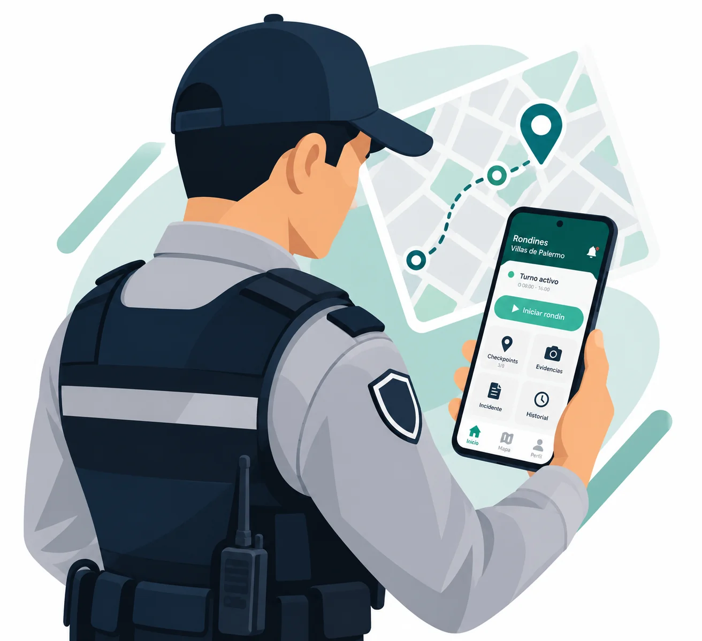
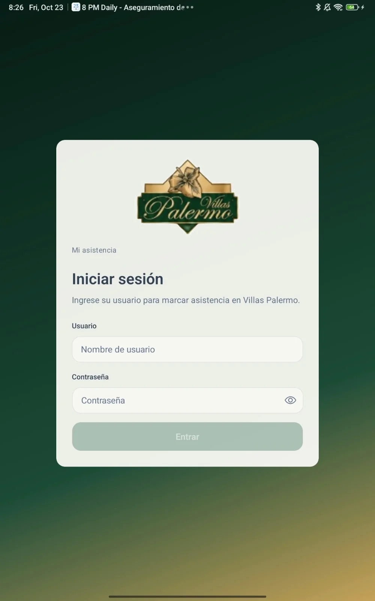
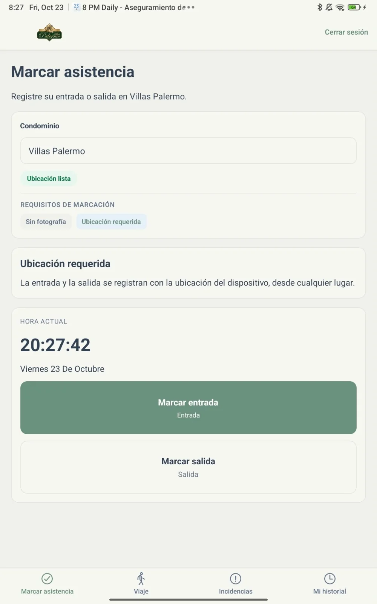
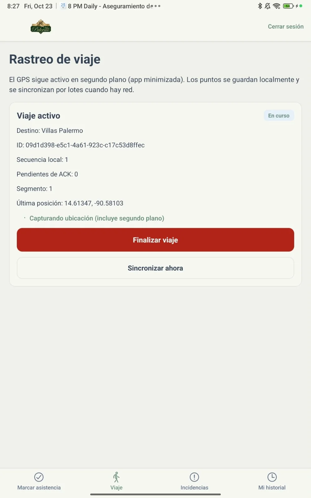
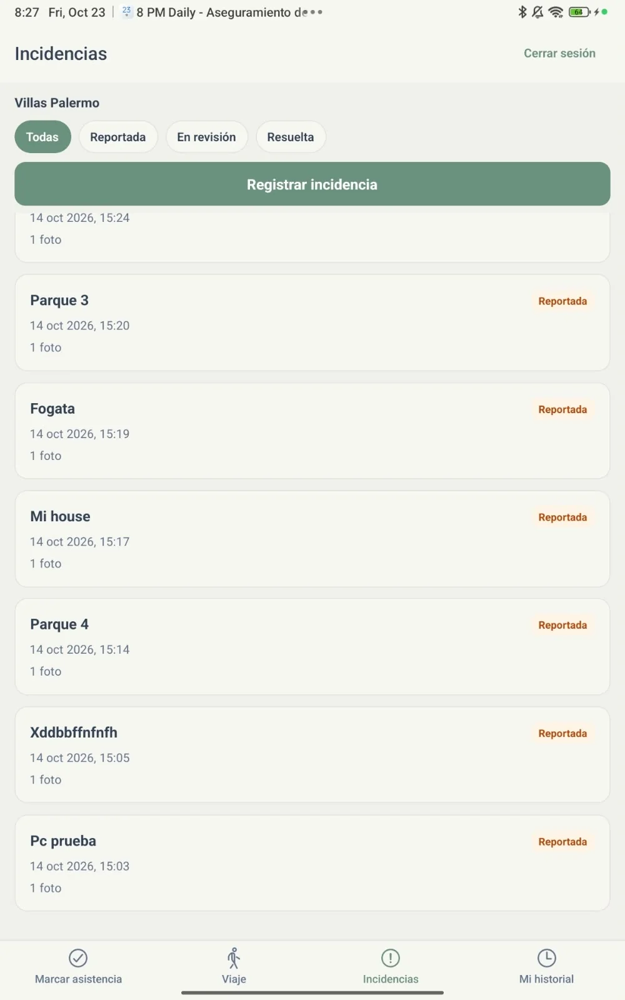
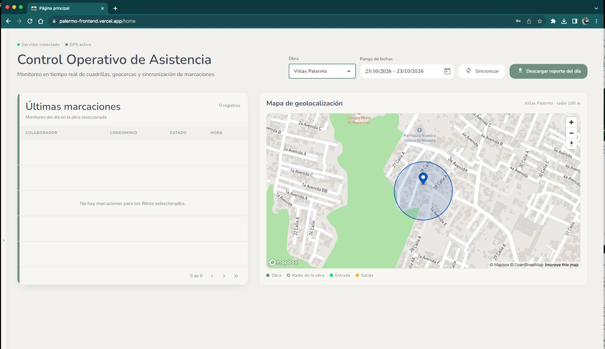
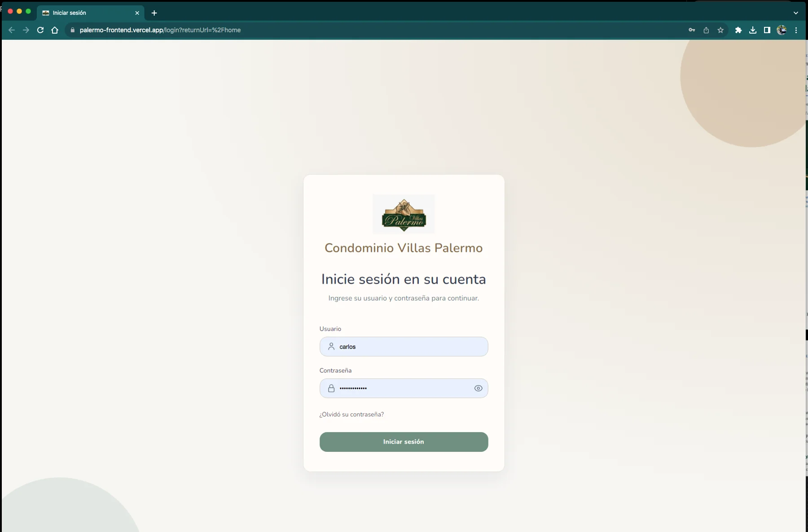

SITUACIÓN ACTUAL
Información dispersa y supervisión limitada
Los controles manuales dificultan la consulta rápida de asistencias, recorridos e incidencias, así como la disponibilidad de evidencia para el seguimiento administrativo.
Monitoreo de rondines y control operativo. Una propuesta tecnológica que integra asistencia, geolocalización y registro de incidencias en una solución móvil y web.

El proyecto se enfoca en mejorar el seguimiento de las actividades de seguridad del condominio mediante herramientas digitales accesibles.
Los controles manuales dificultan la consulta rápida de asistencias, recorridos e incidencias, así como la disponibilidad de evidencia para el seguimiento administrativo.
Vigilance Prime centraliza registros desde dispositivos móviles y facilita su visualización desde un panel web, promoviendo mayor trazabilidad y organización de la información.
Los principales módulos que forman parte de la experiencia mostrada en la aplicación y la plataforma.
Registro de ubicación asociado al seguimiento de recorridos y actividades autorizadas.
Marcación de entrada y salida con información de hora y ubicación.
Captura de posiciones durante un recorrido activo y sincronización de datos.
Documentación de eventos con estados de seguimiento y fotografías.
Consulta de marcaciones y visualización geográfica desde navegador.
Herramientas para consultar y descargar información de la jornada.
Capturas de la aplicación utilizada en el proyecto, desde el inicio de sesión hasta la gestión de incidencias.

Acceso al sistemaIdentificación del usuario
AsistenciaEntrada y salida con ubicación
Rastreo GPSSeguimiento de recorrido activo
IncidenciasRegistro y consulta de eventosEl panel web permite consultar marcaciones recientes y visualizar la ubicación del condominio en un mapa, junto con filtros por fecha y opciones de sincronización.
El acceso a funciones internas puede requerir credenciales autorizadas.


La propuesta prioriza la organización de la información, la visibilidad de las operaciones y la documentación de los eventos.
Registros digitales para facilitar el seguimiento de actividades y consultas posteriores.
Información operativa disponible en una plataforma de supervisión.
Incidencias documentadas para apoyar revisiones y decisiones administrativas.
Este sitio presenta el alcance y las pantallas del proyecto académico. Los beneficios descritos son objetivos y ventajas esperadas, no indicadores de impacto operativo ya comprobados.
Vigilance Prime — una solución académica de monitoreo y control operativo desarrollada para el contexto de Villas Palermo.
Volver al inicio ↑